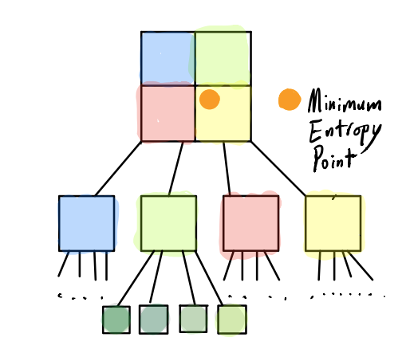
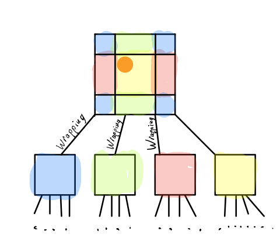

INCOMPLETE DRAFT: Image Compression On a Torus
For CPSC 221, Winter Term 2 2018, UBC

DRAFT: Approach
Torus. Entropy. Pixel Manipulation. Wrapping sections of the image to make a torus
Reference: https://www.students.cs.ubc.ca/~cs-221/2018W2/mps/p3/Underlying Data Structure: Quad-Trees
Similar to a binary tree but with four children instead of two. For the purpose of this project, the tree is perfect (until pruned - a later step). The image needs to be \(2^n * 2^n \) pixels, so it can be further sub-divided into four \( 2^{n-1} * 2^{n-1} \) child-quadrants. This process is done recursively until the quadrant, now leaf, is just \(1 * 1 \) - ie a single pixel. The root is the entire image and each child is a quadrant of that its parent.
The point at which the node is divided is at an optimal splitting point as described below.
Minimum Entropy Point
Now we find a leaf on each quadrant where, if filled by that colour-average, its entropy over the entire image is minimised. The function which calculated entropy was provided for the students, including myself, so our task was to just minimise it when selecting quadrants via a search.
However, the challenge is doing this in a reasonable runtime. Owing to the fact that searching for a single pixel via that pixel having to optimise over \( m \) pixels is a runtime of \(O(m^2)\) per level of the quadtree. Using simple properties, it can be understood that the there would \(log4(m) \) levels. The runtime thus totalling \(O(m^2log4(m))\), far from ideal.
*This is the brilliant part* Stats Object
Instead, we precompute support structures that allow the necessary entropy statistics to be computed in constant time. Theoretically making this compression run in \(O(mlog4(m))\). The stats object contains four 2-dimensional vectors of doubles and a single 3-dimensional historgram of integers.
Four 2-Dimensional Vectors For Colour Channel Summation
- Sum of HueX
- Sum of HueY
- Sum of Saturation
- Sum of Luminosity
Each of these is the summation from (0,0) to the end of the image. These 2D vectors are for the given entropy function. However, hue is on 2 dimensions system but we need to reduce that to 1. That's where the 3D historgram comes in.
Single 3-Dimensional Historgram of Hue Values
- dimensions x and y corresponding to pixels
- dimenion z corresponding to a 10 bins of the count of values within 10 corresponding intervals. After after reducing the hue to a single dimension on 0 to 360 via a given formula. Thus, each bin is a count of values within some 36-wide interval. For example:
| hist[i][j] | [0] | [1] | [2] | [3] | [4] | [5] | [6] | [7] | [8] | [9] |
|---|---|---|---|---|---|---|---|---|---|---|
| for interval | 0-35 | 36-71 | 72-107 | 108-143 | 144-179 | 180-215 | 216-251 | 252-287 | 288-323 | 324-359 |
| count/value | x | xxx | xxxx | x | xxx | xxx | x | xx | xxx | x |
Wrapping Sections ("Torus"-ing)
Minimising the entropy necessitated sometimes wrapping a quadrant from one edge to another. // TODO create image to illustrate this
Pruning
Done recursively on the basis of tolerance. If a quadrant was not within the given tolerance, it and all of it's children would be and filled.
Rendering
When rendering, if the node of the quadtree had its children pruned, the pixels; contained within the children; would be filled recursively with the colour-average of the parent node.
Result
The result is lossy compression!